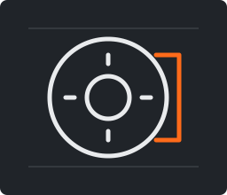

Additional services
Additional services for your car
In addition to regular service, we offer a whole range of other services. These include adjustment and calibration of selected driver assistance systems according to a specific vehicle model and equipment, adjustment and calibration of headlights, chassis diagnostics, wheel alignment, repair of brake discs and others.
-

ODIS diagnostics
ODIS diagnostics, evaluation of measured values and specialist measurements according to the reported fault.
-

Specialist diagnostics
Endoscopy, microscopic fluid inspection, CO₂ and pressure measurement, smoke and UV diagnostics selected for the reported symptoms.
-
Driver assistance system adjustment and calibration
Front Assist, Rear Assist, Lane Assist, Side Assist, Adaptive Cruise Control, Area View, Laser Scanner, Night Vision, Head-up Display
-

Headlamp adjustment
Adjustment and calibration of headlights (including LED, HD Matrix LED-Laser).
-

Suspension diagnostics
Shock absorber and brake system testing, including the electric parking brake, and play detection on both axles.
-

Wheel alignment
We use the manufacturer's equipment with 3D technology for wheel alignment.
-

Brake disc resurfacing
We perform brake disc repairs by turning directly on the vehicle without the need for their disassembly.
-

Electric vehicle rear drum brake servicing
Inspection and maintenance of rear drum brakes. Accurate basic adjustment with a T10635-series tool according to the service documentation of the specific vehicle.
-

Subframe and suspension arm bush replacement
Professional subframe and suspension arm bush replacement using dedicated VAS tools. On selected vehicles, replacement is possible without removing the complete axle assembly.
-

Timing belt and chain replacement
Professional replacement of timing belts and chains in accordance with the service procedures of the manufacturer.
-

DSG and S tronic transmissions
Comprehensive diagnostics, maintenance and mechanical repairs of DSG and S tronic automatic transmissions.
-

Hybrid and electric vehicle servicing
Professional maintenance, regular service inspections and diagnostics of VW Group hybrid and electric vehicles.
-

Engine carbon cleaning
Chemical and mechanical decarbonization of petrol and diesel engines, including the removal of carbon deposits from intake valves.
-

Air conditioning repairs and recharging
We investigate poor cooling and propose a repair; adding refrigerant alone does not repair a leak.
-

Czech roadworthiness inspection (STK) preparation and arrangements
We inspect and prepare your vehicle for the Czech statutory roadworthiness inspection (STK), or arrange the entire process on your behalf.
-

Post-accident vehicle inspection
We will assess the visible damage to the vehicle, check the available safety and technical features and recommend the next course of action.